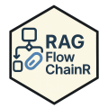

RAGFlowChainR 
Overview
RAGFlowChainR is an R package for Retrieval-Augmented Generation (RAG) workflows with local retrieval backends (DuckDB and VectrixDB) plus optional web search.
The README is intentionally short. Full backend workflows are documented in vignettes.
Development version
install.packages("remotes")
remotes::install_github("knowusuboaky/RAGFlowChainR")Backend Guides
- DuckDB backend article: https://knowusuboaky.github.io/RAGFlowChainR/articles/duckdb-backend.html
- VectrixDB backend article: https://knowusuboaky.github.io/RAGFlowChainR/articles/vectrixdb-backend.html
- Function reference: https://knowusuboaky.github.io/RAGFlowChainR/reference
Quick Start
library(RAGFlowChainR)
rag <- create_rag_chain(
llm = function(prompt) "mock answer",
vector_database_directory = "my_vectors.duckdb",
method = "DuckDB",
use_web_search = FALSE
)
rag$invoke("What is RAG?")
rag$disconnect()For complete ingestion, indexing, and backend-specific setup, use the two backend vignettes above.
Environment Setup
Sys.setenv(TAVILY_API_KEY = "your-tavily-api-key")
Sys.setenv(OPENAI_API_KEY = "your-openai-api-key")
Sys.setenv(GROQ_API_KEY = "your-groq-api-key")
Sys.setenv(ANTHROPIC_API_KEY = "your-anthropic-api-key")License
MIT (c) Kwadwo Daddy Nyame Owusu Boakye